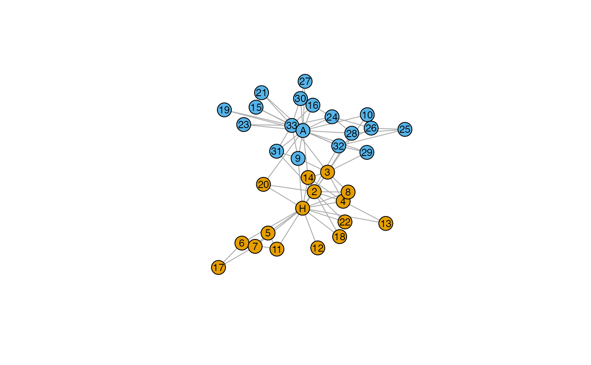
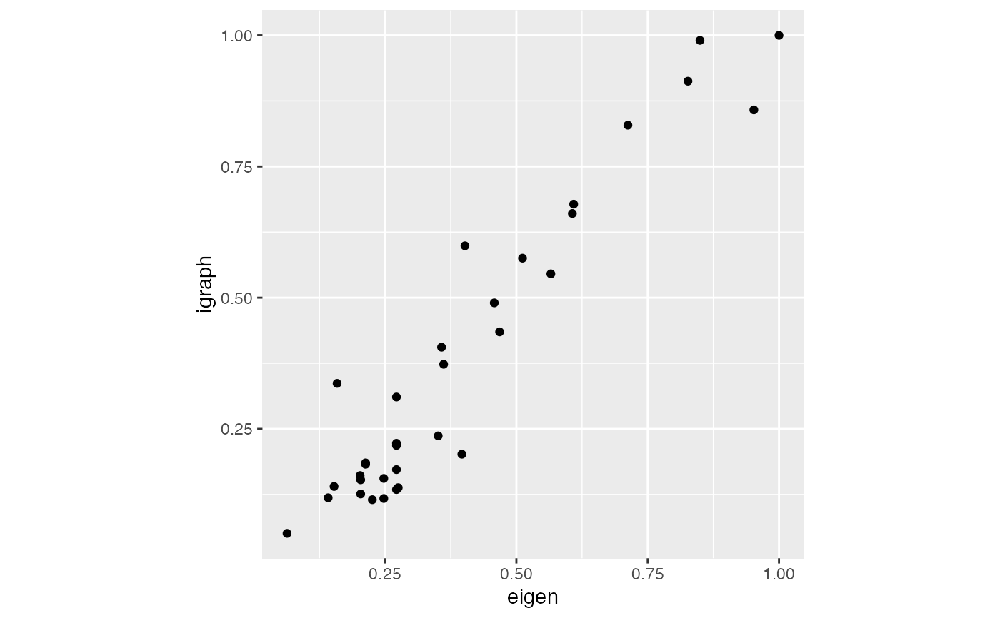
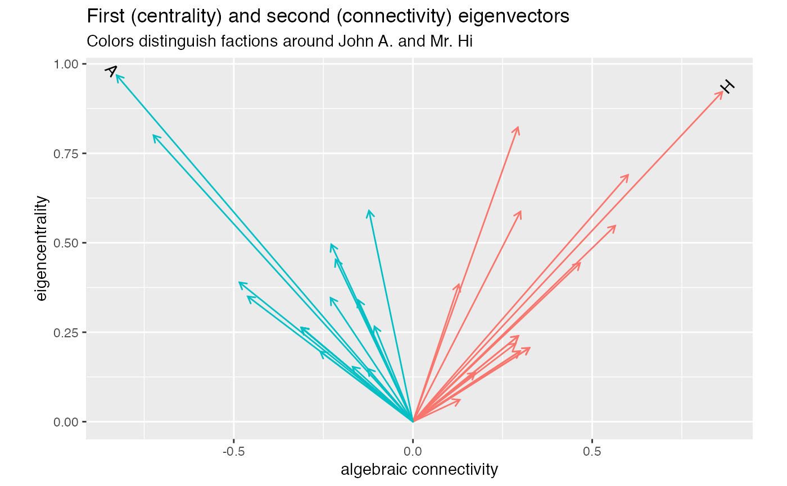
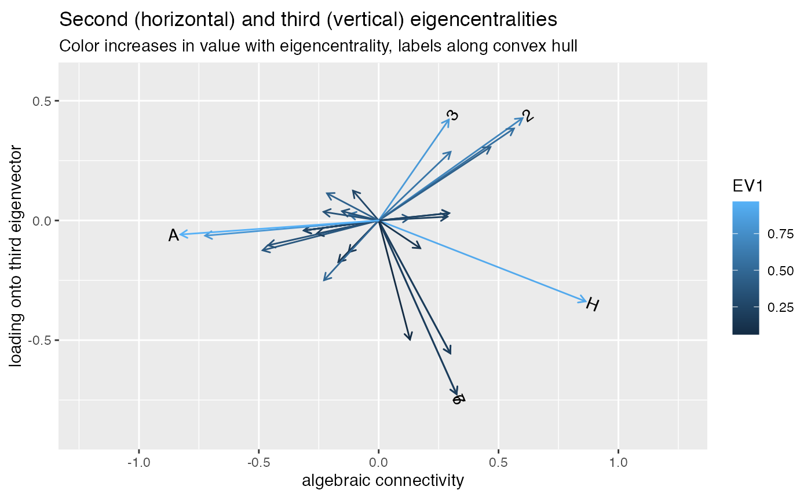

wrap-ord.RdThese *_ord functions wrap functions imported from other
packages with modifications for use with 'tbl_ord' methods. Some parameters
are hidden from the user and set to settings required for these methods,
some matrix outputs are given row or column names to be used by them, and
new '*_ord' S3 class attributes are added to enable them.
eigen_ord(x, symmetric = isSymmetric.matrix(x)) svd_ord(x, nu = min(dim(x)), nv = min(dim(x))) cmdscale_ord(d, k = 2, add = FALSE) logisticSVD_ord( x, k = 2, quiet = TRUE, max_iters = 1000, conv_criteria = 1e-05, random_start = FALSE, ..., partial_decomp = TRUE, main_effects = TRUE ) logisticPCA_ord( x, k = 2, m = 4, quiet = TRUE, partial_decomp = FALSE, max_iters = 1000, conv_criteria = 1e-05, random_start = FALSE, ..., main_effects = TRUE ) convexLogisticPCA_ord( x, k = 2, m = 4, quiet = TRUE, partial_decomp = FALSE, max_iters = 1000, conv_criteria = 1e-06, random_start = FALSE, ..., main_effects = TRUE, ss_factor = 4 )
| x | a numeric or complex matrix whose spectral decomposition is to be computed. Logical matrices are coerced to numeric. |
|---|---|
| symmetric | if |
| nu | the number of left singular vectors to be computed.
This must between |
| nv | the number of right singular vectors to be computed.
This must be between |
| d | a distance structure such as that returned by |
| k | the maximum dimension of the space which the data are to be represented in; must be in \(\{1, 2, \ldots, n-1\}\). |
| add | logical indicating if an additive constant \(c*\) should be computed, and added to the non-diagonal dissimilarities such that the modified dissimilarities are Euclidean. |
| quiet | logical; whether the calculation should give feedback |
| max_iters | number of maximum iterations |
| conv_criteria | convergence criteria. The difference between average deviance in successive iterations |
| random_start | logical; whether to randomly inititalize the parameters. If |
| ... | Additional parameters passed to original functions. |
| partial_decomp | logical; if |
| main_effects | logical; whether to include main effects in the model |
| m | value to approximate the saturated model. If |
| ss_factor | step size multiplier. Amount by which to multiply the step size. Quadratic
convergence rate can be proven for |
The following table summarizes the wrapped functions:
| Original function | Hide params | Add names | New class |
base::eigen() | Yes | Yes | Yes |
base::svd() | Yes | Yes | Yes |
stats::cmdscale() | Yes | No | Yes |
logisticPCA::logisticSVD() | No | Yes | No |
logisticPCA::logisticPCA() | No | Yes | No |
logisticPCA::convexLogisticPCA() | No | Yes | No |
# Graph Laplacian eigenvectors for spectral partitioning data(karate, package = "igraphdata") igraph::plot.igraph( karate, vertex.label.family = "sans", vertex.label.color = "black", vertex.label.cex = .75 )# first eigenvector (centrality) karate_eigen_cent <- igraph::eigen_centrality(karate) # eigendecomposition karate %>% igraph::as_adjacency_matrix(sparse = FALSE) %>% eigen_ord() %>% as_tbl_ord() %>% mutate_rows( faction = igraph::vertex_attr(karate, "Faction"), name = igraph::vertex_attr(karate, "name"), label = igraph::vertex_attr(karate, "label") ) %>% print() -> karate_eigen#> # A tbl_ord of class 'eigen_ord': (34 x 34) x (34 x 34)' #> # 34 coordinates: EV1, EV2, ..., EV34 #> # #> # Rows: [ 34 x 34 | 3 ] #> EV1 EV2 EV3 ... | faction name label #> | <dbl> <chr> <chr> #> 1 0.355 0.387 -0.198 | 1 1 Mr Hi H #> 2 0.266 0.269 0.250 ... | 2 1 Actor 2 2 #> 3 0.317 0.131 0.247 | 3 1 Actor 3 3 #> 4 0.211 0.253 0.225 | 4 1 Actor 4 4 #> 5 0.0760 0.134 -0.325 | 5 1 Actor 5 5 #> # … with 29 more rows #> # #> # Columns: [ 34 x 34 | 0 ] #> EV1 EV2 EV3 ... | #> | #> 1 0.355 0.387 -0.198 | #> 2 0.266 0.269 0.250 ... | #> 3 0.317 0.131 0.247 | #> 4 0.211 0.253 0.225 | #> 5 0.0760 0.134 -0.325 | #># corroborate eigencentralities tibble::tibble( igraph = karate_eigen_cent$vector, eigen = karate_eigen$vectors[, 1] / max(karate_eigen$vectors[, 1]) ) %>% ggplot(aes(x = eigen, y = igraph)) + coord_equal() + geom_point()# first and second eigenvectors for centrality and connectivity / partitioning karate_eigen %>% confer_inertia(1) %>% ggbiplot(aes(x = 2, y = 1)) + geom_rows_vector(aes(color = as.factor(faction))) + geom_rows_text_radiate(aes(label = ifelse(grepl("H|A", label), label, NA))) + guides(color = FALSE) + labs(x = "algebraic connectivity", y = "eigencentrality") + ggtitle( "First (centrality) and second (connectivity) eigenvectors", "Colors distinguish factions around John A. and Mr. Hi" )#> Warning: NaNs produced#> Warning: NaNs produced#> Warning: NaNs produced#> Warning: Removed 32 rows containing missing values (geom_text_radiate).# second and third eigenvectors karate_eigen %>% confer_inertia(1) %>% ggbiplot(aes(x = 2, y = 3)) + scale_x_continuous(expand = expand_scale(mult = .3)) + scale_y_continuous(expand = expand_scale(mult = .2)) + geom_rows_vector(aes(color = EV1)) + geom_rows_text_radiate(stat = "chull", aes(label = label)) + labs(x = "algebraic connectivity", y = "loading onto third eigenvector") + ggtitle( "Second (horizontal) and third (vertical) eigencentralities", "Color increases in value with eigencentrality, labels along convex hull" )#> Warning: NaNs produced#> Warning: NaNs produced#> Warning: NaNs produced#> Warning: `expand_scale()` is deprecated; use `expansion()` instead.#> Warning: `expand_scale()` is deprecated; use `expansion()` instead.